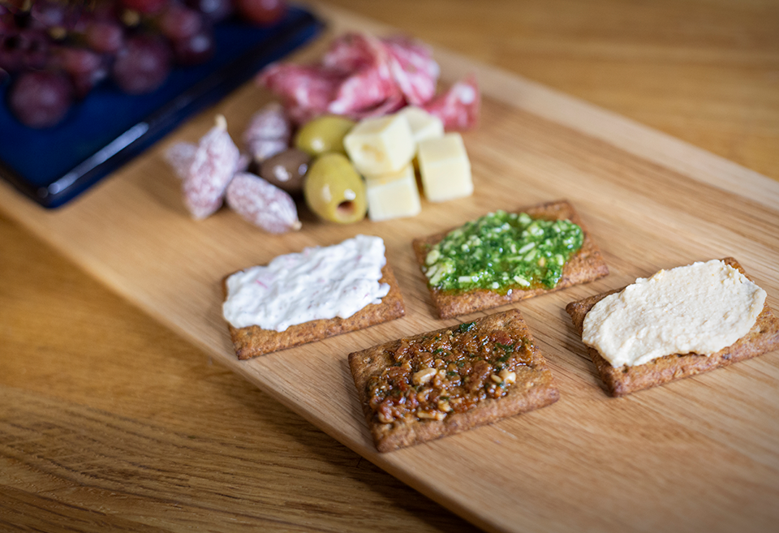
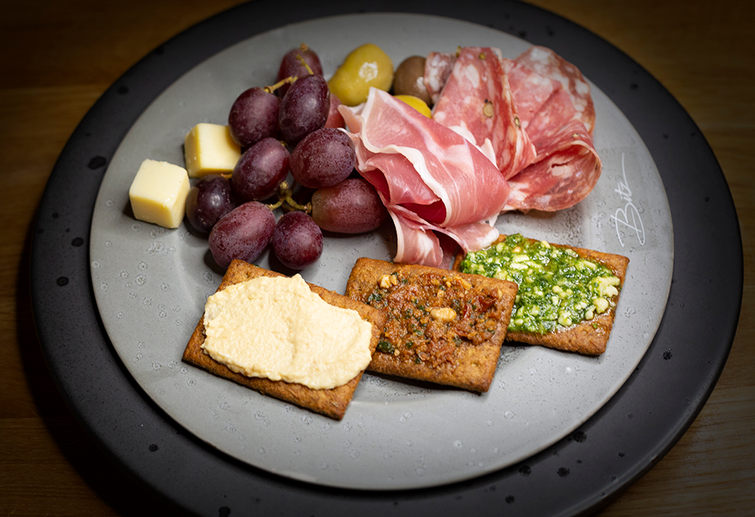

MØN RUGKIKS
Rugkiksen er fremstillet med mask, øl og malt fra Bryghuset Møn, og det giver en helt unik struktur og et fantastisk bid til kiksen. Match kiksens nøddeagtige aroma med let saltede oste som fx Vesterhavsost, Manchego eller Prima Donna, eller prosciutto, pesto og cornichoner som natmad eller snack
Nyd en lækker og hurtig snack. Vores Rugkiks kan nydes som mellemmåltid, eller som en hurtig snack på farten
Nyd Din aftensmad, med vores velsmagende rugkiks på menuen. Suppler med dine fortrukne pålæg og dressinger! Velbekommen
Dekorer vores rugkiks til dine gæster og nyd en smagfuld og indebydende middag


Gennem mere end 125 år har Karen Volf været synonym med traktementet på de danske kaffeborde. Men selv om de sprøde kager er en dansk klassiker, er det de færreste, der kender historien bag navnet. Karen Volf var en usædvanlig kvinde, der med hårdt arbejde, mod og et bankende hjerte for håndværket grundlagde Danmarks første kagefabrik. Hun var ikke alene en frontløber, men satte også sit aftryk på historien som forretningskvinde i en tid, hvor kvinder hørte til i hjemmet.
.jpg)
Ikke alle synes, at den nyslåede forretningskvindes popularitet var lutter lagkage. Hun befandt sig i et traditionelt mandeerhverv, hvor bagermestre drev deres hver deres butik, men Karen havde nye idéer. Hun udvidede selv det lille bageri til en storproduktion, der i branchen blev anset som et mønsterbageri, og kunne derfor sælge sine populære kager vidt og bredt. Nu kunne alle købe Karen Volfs kager og få bragt dem ud i en specialdesignet kageautomobil med reklamer på siderne, hvilket ikke var set før.
Bisca A/S (Hovedkontor & Produktion)
Ahornvej 1
DK-4780 Stege
Denmark
CVR-nr. 27702279
Åbningstider:
Mandag-torsdag kl. 08.00-16.00
Fredag kl. 08.00-12.30
Telefon: +45 72110000
Bisca A/S (Salg- & Marketing)
Stensmosevej 15, L4
DK-2620 Albertslund
Denmark